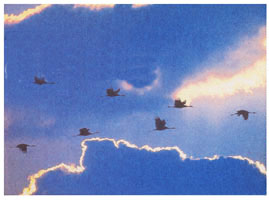

SEASONS OF EARTH AND SKY
A "once in a lifetime" meteor shower.
North of Subtropical climates, the coming winter weather brings the threat of death to many plants and animals that are exposed to the elements. Some life preserves its next generation by planting seed or egg snugly in the ground or in underwater ooze.
Other animals preserve themselves by finding a burrow or den and entering the strange deep sleep of hibernation. But that still leaves numerous species that take the most spectacular option of all: they leave, en masse, by the millions and billions, for warmer lands.
This is the magic of migration. We all learn the basic concept as children, and have perhaps at least seen the southbound V's of Canada geese and heard their stirring calls. But familiarity breeds contempt, or at least indifference. And, as so often happens, what we think we know-the sun by day, the moon by night, what migration is-we really are amazingly ignorant about. It's time to shake off that supposed familiarity and to witness a fundamental wonder and mystery of nature anew.
Try to imagine the sheer number of birds, millions and billions, migrating south. Why don't most of us notice their throngs? One reason is that, in some cases, the full parade of a species may take many weeks to pass, without any one day having a spectacular concentration. A more common and fundamental reason is that most of us tend to grow virtually blind to whatever does not directly affect us. Another reason is that migration is funneled along certain preferred routes-ones that offer easier flight and, in many cases it seems, more recognizable landmarks. If you don't live near one of these routes, there may be far fewer migrants passing through your neighborhood. Yet another reason-one you might not suspect-is that most of bird migration takes place at night. You might think the experience of seeing flocks of birds passing in front of the moon in a telescope is extremely rare. In reality, it can be a relatively common experience if the observer is located along one of the major "flyways."
Birds aren't the only migrators. There are insects who also take a winter vacation. Most of these are shorter trips. But then there is the famous case of the monarch butterflies. Many of these orange butterflies journey from the northern United States and southern Canada to a mystical winter retreat all the way down in the mountains of Mexico. it's hard to believe anything so fanciful-looking and delicate is really a living creature, let alone one animated by an instinct powerful and knowing enough to carry it 1,500 miles or more across many and varied landscapes to reach a spectacularly specific location.
And that, of course, is the greatest mystery of migration: what guides it? The answer, after long scientific study of many species, seems to be many things. Some birds-the beautiful indigo bunting, for instance-rely heavily on sighting particular star patterns (like the Big Dipper). Other birds apparently are guided, in part, by the magnetic field of the Earth. Many use geographic landmarks as guides. Life is so gifted, we have to struggle to understand its many powers. But it is not at all difficult to be awed by marvels like migration.
The sight of a lifetime may be coming to a sky near you on the night of November 17-18. We're talking about a spectacle that might truly deserve the epithet "of biblical proportions," a "meteor storm" featuring possibly thousands of meteors per hour. If it occurs, which is by no means a certainty, what is the best way to catch this phenomenal natural event? To answer that question, we first need to discuss a little background about meteors in general and the Leonid shower and storm in particular.
Meteors, popularly known as falling stars or shooting stars, are actually streaks of light caused when bits of space rock or iron enter Earth's atmosphere at tremendous speeds and burn up from friction. Many meteors are debris from comets. And when Earth passes near the orbits of certain comets on the same days each year, what we see is an increased number of meteors seeming to shoot out from a particular point in the constellations-in other words, a "meteor shower."
Now suppose that the pieces of space dust and rock are not scattered evenly around the orbit of a comet. Suppose there is a tremendously denser "meteoroid swarm," perhaps following the comet itself around its orbit. When this is the case, there will come, once in many years or decades, a time when the Earth passes into the swarm and we get to see not just an ordinary meteor shower, not just five or ten or even 50 meteors per hour. If the swarm is dense enough, it may produce in our skies hundreds, or even thousands of meteors per hour-a meteor storm.
The greatest meteor storms known in history are those that have been produced by Comet Tempel-Tuttle and the Leonid meteor shower. The comet takes an average of about 33 years to complete one orbit, so about every 33 years there is a chance-usually in the year or two after the comet passes Earth and sun-that we will enter the Leonid swarm and see a storm of these shooting stars pour out of Leo the Lion on a single incredible morning in mid-November.
There are just two problems. Sometimes the big year comes and the storm doesn't happen. The gravity of the planet Jupiter tends to cause small but significant changes in the comet's orbit, and with it, the swarm. The storm was magnificent in 1799. Then on November 13, 1833 it was even greater: That was "The Night the Stars Fell on Alabama," while farther north, the flashes of thousands of Leonid meteors awakened Bostonians in their beds. In 1866 there was a lesser but still impressive Leonid display. But around 1899-1900 and 1933, the showing was far less spectacular. What would happen in 1966?
What happened before dawn on November 17, 1966, was the greatest meteor storm on record. In Arizona a team of astronomers watched in awe as the numbers kept increasing. At each moment, there were numerous meteors bursting, numerous meteors brighter than any star, and numerous lingering trails. The astronomers estimated that the rate peaked at about 500,000 per hour!
Why isn't the 1966 Leonid meteor storm more famous? Because it was little publicized in advance and not many people just happen to be out at 5 a.m. on a November morning. But it's also true that the storm tends to last only a few hours, and is only seen in its full glory from the range of longitudes on Earth that have Leo above their horizon in the dark at the time of the storm. In 1966 the American Southwest was at the best longitude and was blessed with clear skies (apparently California was cloudy that morning).
So what are the prospects for November 1998 and 1999? Experts believe that both years stand a good chance of producing truly grand displays of Leonids. Unfortunately for Americans, the most likely time for Earth to pass through the swarm is predicted to be on November 17 sometime around 1 to 3 p.m. eastern standard time-broad daylight. Leo sets around that time, but if you are extremely ambitious, you may still want to sit out and scan high in the west around that time (one hour earlier by clocks in the central time zone, etc.) in the hopes of seeing at least a few of the brightest meteors bursting forth in the blue sky. Remember also that Leonid displays have defied predictions before and that, wherever you are, you should keep a watch from late evening to dawn on both the nights of November 16-17 and 17-18. Suppose that your location gets to see only 1% as many Leonids as the best longitude does. if the best place gets 10,000 Leonids in an hour, you will stiff see 100 an hour. Few people have seen that many shooting stars in their entire fife!
It took one lady's decades-long letter writing campaign and perhaps the pressure of war on this nation's 16th president to get the modem celebration of Thanksgiving instituted. As you probably remember learning in grade school, the day commemorates the harvest reaped by the Pilgrims in 1621. But, although there were sporadic celebrations of Thanksgiving during colonial times and in the early days of the nation (indeed, George Washington proclaimed November, 26, 1789, the first national Thanksgiving Day), we owe the modem, annual, official celebration of the holiday to Sarah Josepha Hale and Abraham Lincoln.
Author, magazine editor, and feminist, Hale is perhaps best remembered for her children's verse, "Mary Had a Little Lamb." But throughout the course of her life, this daughter of a Revolutionary War captain wrote letters to congress, five presidents, and other officials requesting that Thanksgiving be recognized as a national, annual holiday. it was not until 1863, however, that Lincoln considered the idea and decided to enact it. Lincoln apparently hoped that even the Confederacy might choose to recognize and honor this holiday on the basis of its own merit. It would thus be a step toward reuniting the nation.
In 1941 Congress decreed that Thanksgiving should henceforth be celebrated on the fourth Thursday of November.
(click for seasonal Almanac )
The'98 growing season's over and the immediate future promises us little but a deluge of cold rain or colder snow, depending on where you spend your winters.
Don't expect a repeat of last winter's freakish El Niño weather. A strong weather reversal-called La Niña (young girl) in a PC effort to gender-balance El Niño (young boy) but historically termed El Vieho (old man)-is predicted to follow. El Niño's equatorial-Pacific Ocean temperature pattern will flipflop, producing different, but equally freakish, weather.
Meteorologists tell us that recent El Vieho years have featured cooler and much wetter weather in the Northwest, a colder Northern tier, much warmer and wetter weather in the East Central states, warmer than usual weather in the Southeast, and dryer than normal weather in the Southwest, all around the Gulf of Mexico, and up the Atlantic seaboard from Southern Florida to inland Maine.
Here in the North, we're making ready by putting up an extra cord of wood, resoling the Bean boots we barely used last winter, and installing a block heater in the new truck and chains on the snow blower.
In the garden, you should mulch the strawberry patch, asparagus, parsnips, over wintering beets, and carrots extra welt under straw. Cover the winter-keeping root vegetables with black plastic to keep the ground thawed as long as possible for early winter digging. Anticipating a winter with no prolonged seedling-killer warm spells, you can plant-in finely tilled soil and under a loose, thick mulch spinach, leaf lettuce, and scallion seeds for an early start to salads next spring. Risk a row or two of edible pod pea seed as well.
In the stock barn, rabbit hutches, and henhouse, close or plastic-sheet low windows, drop the burlap drapes at weather-ends of cages, and seal cracks and openings in the outer walls against winter wind. Remember, it's the draft more than the cold that causes discomfort or harm to your animals. Check the immersion water heaters in box stalls and heater bases for floor-mount waterers.
Drain fuel tanks on the tractor and yard and garden power tools and run engines dry, or fill tanks after adding a fuel-stabilizer. Remove spark plugs, squirt a little light oil in the plug hole, and pull engine through once or twice. Lube all controls and wax the paint Cover with a tarp to keep off caustic chicken dust.
Clean roof gutters of fall leaves so downspouts won't clog, letting gutters fill with melting snow and supporting attic-flooding ice dams at roof edges. If you've contemplated eave-heating cables to prevent ice dams, now is the year to install them! Once the storm windows are on, get out your caulking gun or a box of rope caulk and the stepladder, and spend a crisp late-fall day sealing gaps between siding and trim around the windows and doors. If your home is an old one, windproof the often leaky joint between foundation and sill by piling hay bales around or stapling on a barrier of 4 ml. or thicker plastic film with wood stakes tacked an every few feet to prevent wind-flap damage.
Has the septic tank been pumped out in the last three years? It's easier to get it done now than in February, when the frost is too deep to hand dig. (if a new-to-you house, do you even know where your septic tank clean-out hatch is? How about underground drain pipes, waterlines, or electric cables? Best find out where they all are before calling in a backhoe.)
If you haven't gotten around to the sooty and parlous ladder work of scouring out the chimney, woodstove, and pipes by now, you won't. Avoid a flue fire and call in professional chimney sweeps. You'll have to wait in line a while this late in the season and maybe pay a little more, but the sweeps'll arrive in their stove-pipe hats before the cold gets serious.
*Bring as much wood as possible inside under cover and split it small to dry for quick starting fires on cold late-fall mornings. Lay in enough candles, lamp oil, and firemakers, dry and canned food, paper products, bottled water, and radio batteries for two weeks or more of no power and possible isolation due to winter storms. If you are on grid power and the electric freezer is in a warmed spaced and full of this season's priceless produce and meat, shop around for the best price on a gasoline-powered electric generator large enough to run it for several hours a day.This can also power the water pump long enough to fill toilets and a washwater-heating tub on the woodstove, plus a computer and TV in the evenings. Store (safely) enough fuel to operate it for a month.
Be prepared and stay warm this coming El Vieho winter.
-John Vivian
|
 Monarch butterflies...the family of migratory animals |
|
|
|
|
|
|